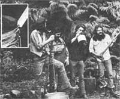

Even homesteaders need to relax and enjoy themselves from time to time, right! And almost everybody these days wants to cut his or her cost of living. So how about a little do-it-yourself entertainment?
And that's what this column is all about. Down-home music that you can make . . . and the instruments (which, in some cases, you can also make!) to play that music on.
We may also publish some songs, discuss music as a potential home business, run discographies, bibliographies, and/or include whatever other do-it-yourself music topics you'd like to see.
The important thing is that this is a new column. If you like it, write to me and let me know. If you have some ideas for this feature, let me know that. I'm open to any suggestions or information you care to contribute. I'll even try to answer your questions about down-home music . . . but - both for the benefit of all MOTHER's readers and to ease my correspondence load - I'll deal with those questions, whenever possible, here in this column . . . rather than in personal letters.
Address your correspondence - for this column and this column only - to Marc Bristol, 31722 N.E. 180th Place, Duvall, Wash. 98019.
The television and radio pickings are awfully slim for down-home music aficionados these days. Both mediums have become so dominated by a mad search for high ratings in the major population centers ... that even the "country music" currently being broadcast is aimed at country people who now mostly lead citified lives.
Thank heavens, then, for record players and record albums. And a special thanks to the Great Spirit for the handful of small record companies which still release recorded collections of songs that any homegrown musician can enjoy getting his or her ears into! This column is devoted to a few of those small companies, starting with:
ARHOOLIE RECORDS, Dept. TMEN, 10341 San Pablo Avenue, El Cerrito, California 94530. The blues - both country and city - make up a large portion of Arhoolie's whopper of a catalog and the company is probably the recording mainline to this type of music. But Arhoolie also offers Cajun, Chicano, old-time country, contemporary folk, gospel, and a little jazz too.
Arhoolie's current hot artist is Clifton Chenier, who plays blues/rock (his style is called "Zydeco") on the accordian while his brother, Cleveland, backs him up on the rubboard (a homemade instrument that's basically the same as a washboard). Clifton has a very interesting sound . . . especially when he sings the blues in French.
And - although I haven't yet heard them - several of Arhoolie's albums (if you can judge 'em by their titles) should be quite inspirational to down-home musicians. A couple of examples are JUG, Jookand Washboard Bands and Washboard Sam.
BAY RECORDS (Dept. TMEN, 1516 Oak Street, Suite 320, Alameda, California 94501) recently sent me two samples from its catalog . . . both of which I love and both of which get played daily at our house. In fact, the first time we gave a listen to one of them-Hank Bradley's Music of the Poison Coyote Kid - my four-year-old son jumped up and said, "Let's dance! "
Bradley plays good music and his whole album - from "Lonesome Cowboy's Breakfast" . . . through several fiddle, banjo, and guitar tunes . . . to "Olympia" (a strange, old-sounding, small-orchestra piece) - is great. Except for the last number, which does feature other musicians, Hank plays all the instruments heard on the album and wrote all the tunes but one.
The second sample that Bay sent along - Gypsy Gyppo String Band - is a fine collection of old-time fiddle and country songs. I particularly like "Wreck of the Tennessee Gravy Train", "Coot From Tennessee", "Milwaukee Blues", and "If I Lose, Let Me Lose" . . . all with the genuine country string-band sound so hard to find today.
The rest of Bay Record's catalog (a total of 17 albums at the time of this writing) includes some Irish Rebellion music and contemporary "folk" music by, among others, such ethnic groups as The Silver String Macedonian Band and The Berkeley Scottish Players.
BISCUIT CITY RECORDS (Dept. TMEN, 1106 East 17th Avenue, Denver, Colorado 80218) got its start with two albums called Colorado Folk and Colorado Folk II and its catalog features both solo artists and bands playing folk, bluegrass, Irish, country, and related music. Jim Ransom - a co-owner of the company - plays his own and other people's folk/western ballads on several of the records.
I've been particularly jazzed by one Biscuit City album: the Ophelia Swing Band's Swing Tunes of the '30's and '40's. The record captures the special feel and excitement generated by a street band (which doesn't make any money unless its audience really likes it). The tunes are all old swing numbers performed with a great deal of humor on guitar, fiddle, mandolin, bass, and washboard (with some snare drums, harmonica, and spoons on a couple of cuts). The vocals are great and the instrumental performances (especially by Washboard Chaz) are even better! Ophelia plays "Jack of Diamonds" with so much soul that I have to call it a gospel song!
Biscuit City also features Cowtowns and Other Planets by Fingers Akimbo ... a duo which plays autoharp, violin (both acoustic and electric), guitar, mandolin, and mandocello backed up by other musicians on various instruments natural and supernatural (such as a flute and an electric violin played through a synthesizer).
There's a dulcimer album in the BC catalog, too. And, among others, it features Robert Force and Albert d'Ossche . . . authors of the book, In Search of the Wild Dulcimer (available for $3.95 plus 96 cents postage and handling from Mother's Bookshelf, P.O. Box 70, Hendersonville, North Carolina 28739) .
As a final goodie, Biscuit City offers professional studio and record-pressing services to anyone who wants to produce his or her own records. (I'll deal with this aspect of music as a home business in another column.)
EDUCATIONAL ACTIVITIES, INC. (Dept. TMEN, Freeport, New York 11520) produces records and other material for young children. Homemade Band by Hap Palmer - one of the company's products - actually describes several easy-to-make-and-play instruments right on its jacket. The music on the album is very good, too, and will encourage children to think of themselves as musicians.
This record - in short - is head-and-shoulders above the dry, didactic children's books and records that I remember from my childhood and I salute Educational Activities for producing it. Children may lack economic power, but they're certainly no less perceptive as a group than adults . . . and they deserve products that won't insult their abilities or their intelligence.
COUNTRY RECORDS (Dept. TMEN, P.O. Box 191, Floyd, Virginia 24091) specializes in bluegrass and old-time country tunes, both by contemporary artists and as reissued "oldies". The contemporary musicians include Kenny Baker on fiddle, Buck White and the Down Home Folks, the Stanley Brothers, and Norman Blake. Some classic old-time songs cut back in the '20's and '30's by Charlie Poole and the North Carolina Ramblers, plus two volumes of Nashville, The Early String Bands (containing performances by pioneer Grand Ole Opry entertainers) are among the reissues. I'm told that Country Records has other labels available by mail.
FLYING FISH, Dept. TMEN, 3320 North Halsted, Chicago, Illinois 60657. Mike Auldridge (an excellent dobro player), Bryan Bowers (autoharp and other instruments), the Dillards (bluegrass and newgrass/progressive), Jethro Burns (the jazzy mandolin player, formerly of Homer and Jethro), and John Hartford (banjo and fiddle) are some of the artists featured here . . . as is an album entitled That Hillbilly Jazz (by Vassar Clements and others). Flying Fish, apparently, deals in virtuosos of country/folk music.
KICKING MULE RECORDS (Dept. TMEN, Box 3233, Berkeley, California 94703) specializes in solo guitarists such as Stefan Grossman (a cofounder of the company) and the Reverend Gary Davis (Stefan's teacher). KMR is also getting into banjo records and guitarist/songwriter albums.
PHILO RECORDS (Dept. TMEN, The Barn, North Ferrisburg, Vermont 05743) offers such artists as Bodie Wagner (a hobo yodeler), Utah Phillips, The Boys of the Lough (traditional Irish and Scottish music), and Pine Island (a bluegrass group that records on the Fretless label . . . available from Philo).
ROUNDER RECORDS, Dept. TMEN, 186 Willow Avenue, Somerville, Massachusetts 02144. This outfit's catalog - which may be even bigger than Arhoolie's - lists bluegrass and oldtime, string-band music (banjos, guitars, fiddles, dobros, etc.) by both some very talented bands and individual instrument "experts".
Rounder also offers a good selection of contemporary folk, Cajun, Scottish, Irish, Swedish, steel-drum, African, American blues, rock, and nonclassifiable music. I especially like its Holy (and Unholy) Modal Rounders and Jeffery Frederick and the Clamtones doing humorous musical spoofs.
TAKOMA RECORDS (Dept. TMEN, P.O. Box 5369, Santa Monica, California 90405) is known for its albums of solo artists, including early classics by John Fahey and Leo Kottke. Also very interesting, though less well-known, is a somewhat nontraditional Takoma solo effort by Billy Faier . . . which features such tunes as "Pizzaraga" on a five-string banjo.
Two recent Takoma bluegrass albums - both recorded live at a club called McCabe's Guitar Shop in Santa Monica - indicate a new direction for the company. One of the discs - by Byron Berline and Sundance - is fairly traditional bluegrass and contains the classic "How Mountain Girls Can Love" and a couple of Bill Monroe tunes. The other - by Larry McNeely - features versions of Jerry Reed's "Jerry's Breakdown" and Gregg Allman's "Midnight Rider" as well as originals by Larry and guitarist/bassist Jack Skinner.
YAZOO RECORDS, Dept. TMEN, 246 Waverly Place, New York, New York 10014. Blues - with a smattering of Hawaiian, jazz, and ragtime music - is the specialty here. Harmonica Blues... Great Harmonica Performances of the 1980's and 1930's (with a full-color R. Crumb jacket illustration) and albums by Big Bill Broonzy, Reverend Gary Davis, Blind Willie McTell, and Charlie Patton are some of the listings in the Yazoo catalog.
It's difficult to find most of the records issued by these and other small companies in your neighborhood record stores. You'll probably have to order direct from the firms themselves (send each one a dollar first and request its catalog) or from some of the small distributors that specialize in mail-order sales of these "offbeat" labels.
MORNING STAR RECORDS (Dept. TMEN, Box 21, Sussex, New Jersey 07461), for instance, is a good source of the albums described here because of the firm's "buy five records and get one free" deal.
ROUNDER RECORDS (see address listed above) also distributes most of the domestic "folk" labels and some imports, in addition to producing albums of its own.
THE DOWN HOME MUSIC COMPANY (Dept. TMEN, 10341 San Pablo Avenue, El Cerrito, California 94630) carries blues, Tex-Mex Norteno, bluegrass, old-timey, Cajun, traditional jazz, English and Irish folk, rockabilly, Swedish fiddle, and early rock'n'roll music. Down Home also specializes in imports from Australia, Japan, France, Sweden, England, Germany, and other foreign countries.
FIDDLER'S ROUNDHOUSE (Dept. TMEN, 1916 Pike Place, Seattle, Washington 98101) is another mail-order distributor that handles most of the small labels.
Once again, let me emphasize the importance of sending along a dollar with any request for a catalog that you mail to either the individual record companies or the record distributors listed here. These are all "little guys" in the industry, they're performing a labor of love, we wouldn't be able to find most of the music they handle if they didn't handle it, and most of these small shops really can use an extra dollar or two.
In closing this column, I wish to extend my apologies to all the other small record producers that I should have mentioned here . . . but didn't know about or couldn't fit into my limited space. Send me your catalog, guys, and I'll try to get you into the next listing!
My special thanks goes out to the Victory Music Folk and Jazz Review ($8.00 a year from Victory Music, Dept. TMEN, Box 38, Tillicum Bridge, Tacoma, Washington 98492) - my bible in compiling this column - and to Dennis Flannigan (who hosts the Krabgrass program out here every Saturday night from 9:00 till 12:00 on KRAB-FM) for information and for playing some of the records mentioned here while I was putting this column together.
|
 Marc Bristol and other Washington State grassroots musicians wail away on a gutbucket, washboard, and jug ( the axe is a gag). For Marc's original homegrown music column ? which featured gutbucket, washboard, jug, kazoo, musical saw, and spoons ""makin' and playin'"" instructions ? see MOTHER NO. 50. Inset shows gutbucket ""notch and bevel"" details. |
|
|